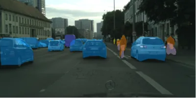
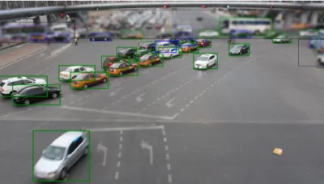
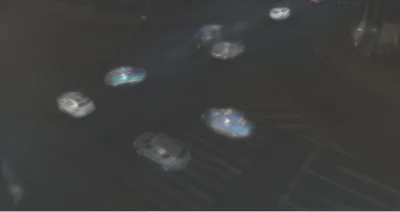
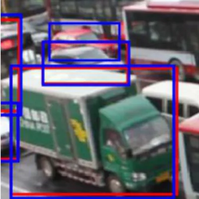

Hughes Perreault
Chercheur en IA · Institut de recherche d'Hydro-Québec (IREQ)
À propos
Je suis chercheur en IA à l'Institut de recherche d'Hydro-Québec (IREQ), où je travaille sur
l'apprentissage automatique pour le secteur de l'énergie. Mes recherches portent sur la vision
par ordinateur et l'apprentissage profond efficace : détecter, segmenter et suivre des objets
dans des images et des vidéos, et fusionner l'information de plusieurs capteurs. Avant l'IREQ,
j'ai été développeur principal en IA chez Haylem et scientifique en IA chez Thales, où j'ai
développé des méthodes de fusion d'images multimodales, de recalage d'images thermiques et
visibles, et de détection de cibles avec des réseaux légers pour l'informatique embarquée. J'ai
obtenu mon doctorat en génie informatique à Polytechnique Montréal en 2021, avec une thèse sur
la détection et la segmentation des usagers de la route dans des images et des vidéos.
Fait amusant : mon nombre de Dijkstra est cinq (cliquez ici) et mon nombre d'Erdős est aussi cinq (cliquez
ici).
Intérêts de recherche
- Vision par ordinateur : détection d'objets, segmentation d'instances et suivi
- Fusion et recalage d'images multimodales (thermique et visible)
- Apprentissage profond efficace pour l'informatique embarquée
- Apprentissage automatique pour le secteur de l'énergie
Actualités
- janv. 2026 Arrivée à l'Institut de recherche d'Hydro-Québec (IREQ) comme chercheur en IA.
- mars 2025 Arrivée chez Haylem comme développeur principal en IA.
- août 2023 Notre article sur la détection de cibles avec des réseaux légers a été présenté à GVSETS 2023 (arXiv).
- juin 2023 MobileFuse publié à FUSION 2023.
- oct. 2021 Arrivée chez Thales comme scientifique en IA.
Postes
Publications choisies




Toutes les publications
2023
- A Lightweight Convolutional Neural Network for Target Detection in an Edge Environment
2023 NDIA Michigan Chapter Ground Vehicle Systems Engineering and Technology Symposium (GVSETS)
@inproceedings{perreault2023lightweight, title = {A Lightweight Convolutional Neural Network for Target Detection in an Edge Environment}, author = {Perreault, Hughes and Ahmad, Ola and Czuboka, Daniel}, booktitle = {2023 NDIA Michigan Chapter Ground Vehicle Systems Engineering and Technology Symposium (GVSETS)}, year = {2023}, eprint = {2611.09756}, archivePrefix = {arXiv} } - MobileFuse: Multimodal Image Fusion at the Edge
2023 26th International Conference on Information Fusion (FUSION)
@inproceedings{perreault2023mobilefuse, title = {{MobileFuse}: Multimodal Image Fusion at the Edge}, author = {Perreault, Hughes and Debaque, Benoit and David, Rares and Drouin, Marc-Antoine and Duclos-Hindi{\'e}, Nicolas and Roy, Simon}, booktitle = {2023 26th International Conference on Information Fusion (FUSION)}, pages = {1--8}, year = {2023}, doi = {10.23919/FUSION52260.2023.10224104} }
2022
- Multimodal Deep Homography Estimation Using a Domain Adaptation Generative Adversarial Network
2nd Workshop on Multimodal Big Data (MMBD 2022), 2022 IEEE International Conference on Big Data (Big Data)
@inproceedings{pouplin2022multimodal, title = {Multimodal Deep Homography Estimation Using a Domain Adaptation Generative Adversarial Network}, author = {Pouplin, Thomas and Perreault, Hughes and Debaque, Benoit and Drouin, Marc-Antoine and Duclos-Hindie, Nicolas and Roy, Simon}, booktitle = {2022 IEEE International Conference on Big Data (Big Data)}, pages = {3635--3641}, year = {2022}, doi = {10.1109/BigData55660.2022.10020557} } - Thermal and Visible Image Registration Using Deep Homography
2022 25th International Conference on Information Fusion (FUSION)
@inproceedings{debaque2022thermal, title = {Thermal and Visible Image Registration Using Deep Homography}, author = {Debaque, Benoit and Perreault, Hughes and Mercier, Jean-Philippe and Drouin, Marc-Antoine and David, Rares and Chatelais, Benedicte and Duclos-Hindie, Nicolas and Roy, Simon}, booktitle = {2022 25th International Conference on Information Fusion (FUSION)}, pages = {1--8}, year = {2022}, doi = {10.23919/FUSION49751.2022.9841256} }
2021
- Détection et segmentation des usagers de la route dans des images et vidéos
Thèse de doctorat, Polytechnique Montréal
@phdthesis{perreault2021these, title = {D{\'e}tection et segmentation des usagers de la route dans des images et vid{\'e}os}, author = {Perreault, Hughes}, school = {Polytechnique Montr{\'e}al}, year = {2021}, url = {https://publications.polymtl.ca/9471/} } - PolyTrack: Tracking with Bounding Polygons
Machine Learning for Autonomous Driving Workshop (ML4AD), NeurIPS 2021
@inproceedings{faure2021polytrack, title = {{PolyTrack}: Tracking with Bounding Polygons}, author = {Faure, Gaspar and Perreault, Hughes and Bilodeau, Guillaume-Alexandre and Saunier, Nicolas}, booktitle = {Machine Learning for Autonomous Driving Workshop (ML4AD), NeurIPS}, year = {2021}, eprint = {2111.01606}, archivePrefix = {arXiv} } - CenterPoly: Real-time Instance Segmentation Using Bounding Polygons
Proceedings of the IEEE/CVF International Conference on Computer Vision Workshops (ICCVW)
@inproceedings{perreault2021centerpoly, title = {{CenterPoly}: Real-time Instance Segmentation Using Bounding Polygons}, author = {Perreault, Hughes and Bilodeau, Guillaume-Alexandre and Saunier, Nicolas and H{\'e}ritier, Maguelonne}, booktitle = {2021 IEEE/CVF International Conference on Computer Vision Workshops (ICCVW)}, pages = {2982--2991}, year = {2021}, doi = {10.1109/ICCVW54120.2021.00333} } - FFAVOD: Feature Fusion Architecture for Video Object Detection
Pattern Recognition Letters, vol. 151
@article{perreault2021ffavod, title = {{FFAVOD}: Feature Fusion Architecture for Video Object Detection}, author = {Perreault, Hughes and Bilodeau, Guillaume-Alexandre and Saunier, Nicolas and H{\'e}ritier, Maguelonne}, journal = {Pattern Recognition Letters}, volume = {151}, pages = {294--301}, year = {2021}, doi = {10.1016/j.patrec.2021.09.002} }
2020
- SpotNet: Self-Attention Multi-Task Network for Object Detection
17th Conference on Computer and Robot Vision (CRV)
@inproceedings{perreault2020spotnet, title = {{SpotNet}: Self-Attention Multi-Task Network for Object Detection}, author = {Perreault, Hughes and Bilodeau, Guillaume-Alexandre and Saunier, Nicolas and H{\'e}ritier, Maguelonne}, booktitle = {2020 17th Conference on Computer and Robot Vision (CRV)}, pages = {230--237}, year = {2020}, doi = {10.1109/CRV50864.2020.00038} } - RN-VID: A Feature Fusion Architecture for Video Object Detection
International Conference on Image Analysis and Recognition (ICIAR 2020), LNCS
@inproceedings{perreault2020rnvid, title = {{RN-VID}: A Feature Fusion Architecture for Video Object Detection}, author = {Perreault, Hughes and H{\'e}ritier, Maguelonne and Gravel, Pierre and Bilodeau, Guillaume-Alexandre and Saunier, Nicolas}, booktitle = {Image Analysis and Recognition (ICIAR 2020)}, series = {Lecture Notes in Computer Science}, pages = {125--138}, publisher = {Springer}, year = {2020}, doi = {10.1007/978-3-030-50347-5_12} }
2019
- Road User Detection in Videos
Prépublication arXiv
@misc{perreault2019roaduser, title = {Road User Detection in Videos}, author = {Perreault, Hughes and Bilodeau, Guillaume-Alexandre and Saunier, Nicolas and Gravel, Pierre}, year = {2019}, eprint = {1903.12049}, archivePrefix = {arXiv} }